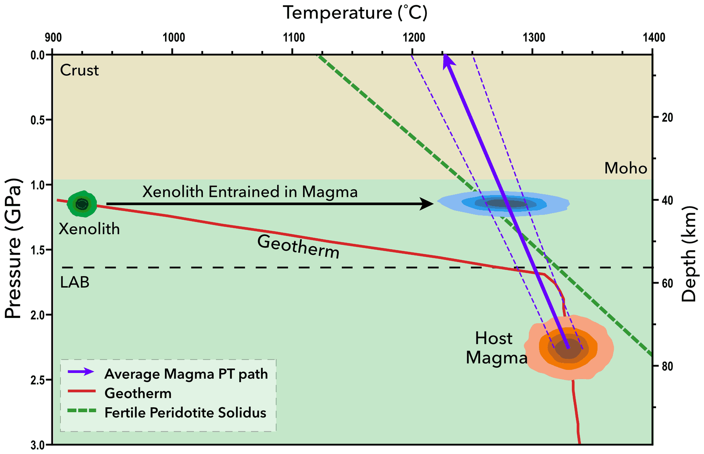
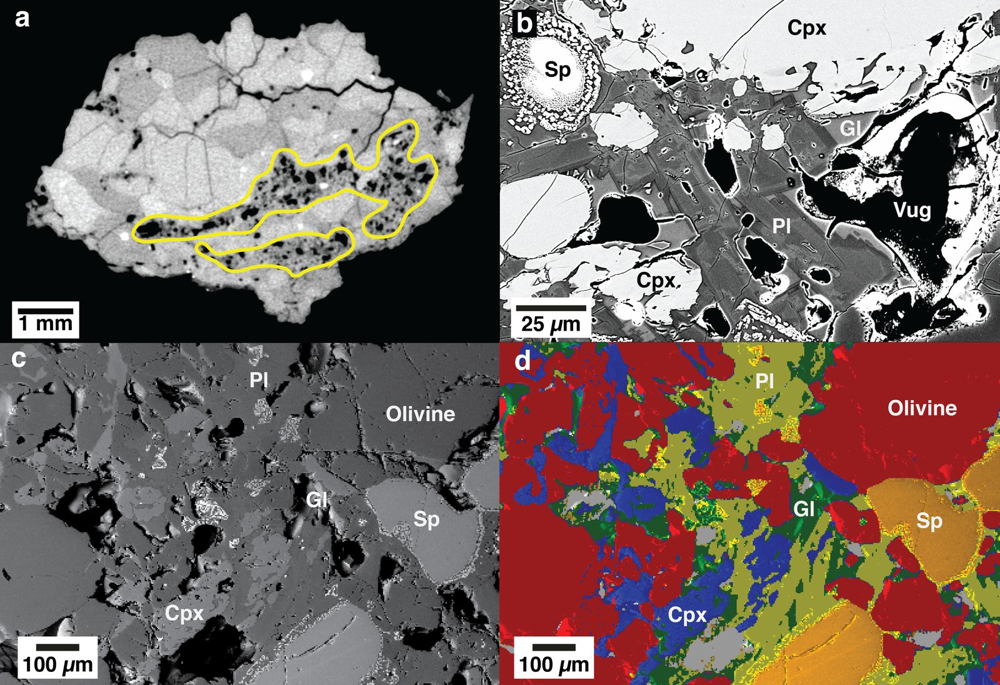
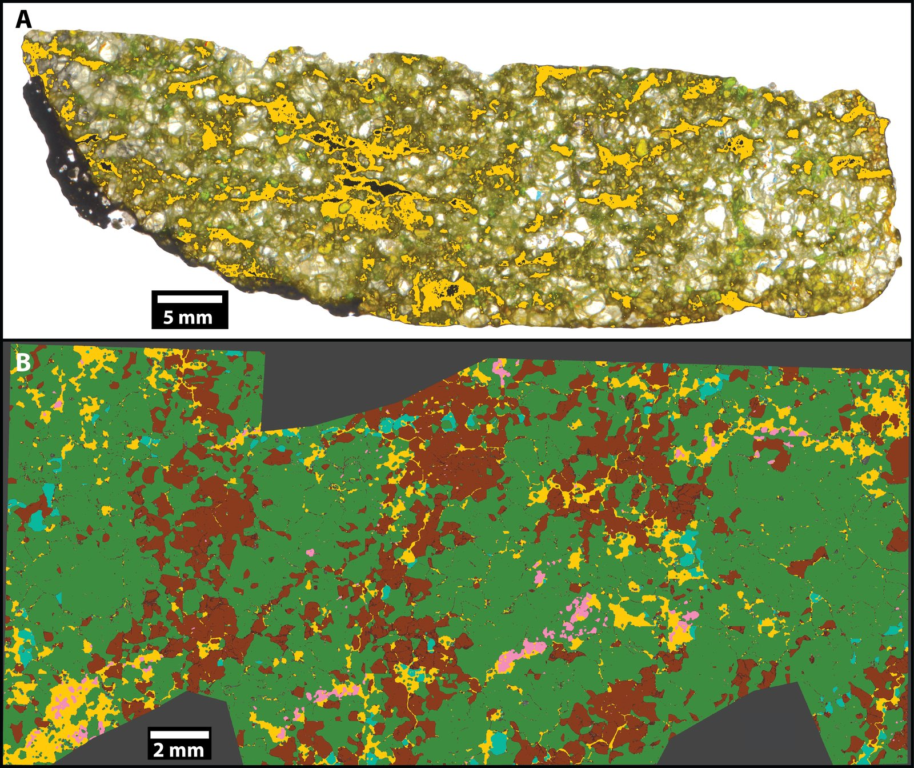
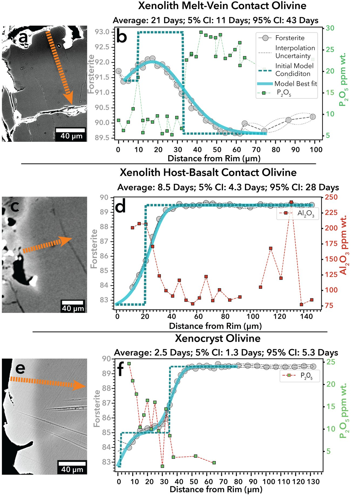
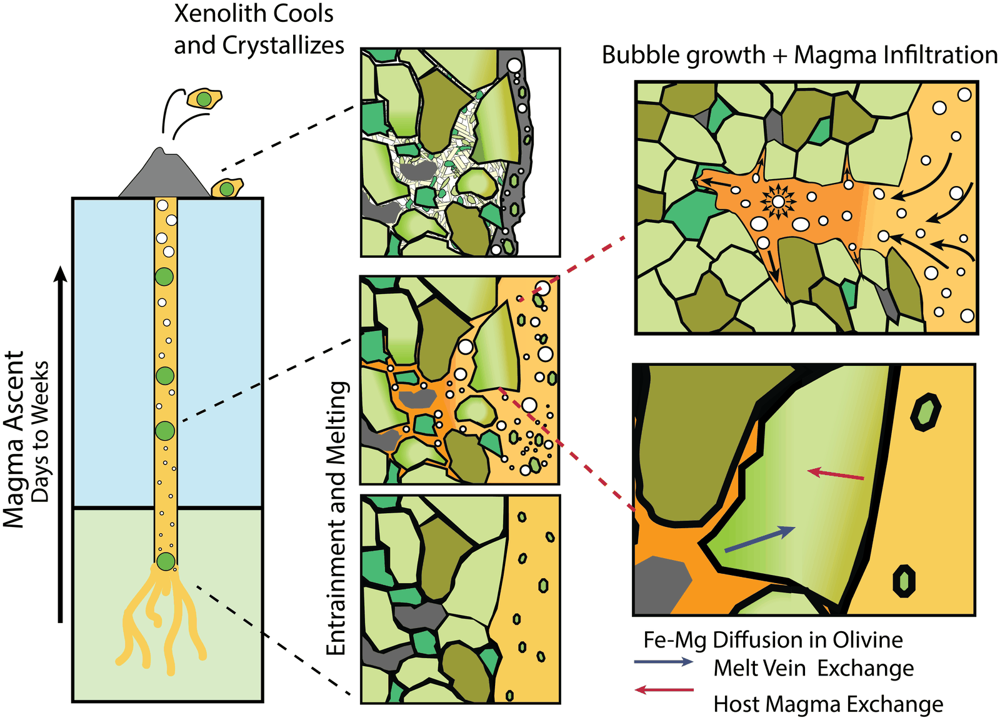

Our paper on melting in mantle xenoliths is out in the Journal of Petrology: Towbin and Plank (2026), Decompression Melting of Peridotite Xenoliths.
Rocks from the mantle, delivered by volcanoes
Xenoliths are pieces of the Earth’s mantle that a rising magma rips off and carries to the surface. They are one of the few direct samples we have of rock from tens of kilometers down, so geologists use them to work out what the mantle is made of and how it behaves.
Many xenoliths contain thin veins of glass and small crystals, the remains of a little melt. The question is when that melt formed. If it formed deep in the mantle, it records something about the mantle. If it formed during the trip up, it records the trip, and anyone reading the rock as a purely mantle sample needs to know that.

What we measured
We studied xenoliths and the basalt that carried them from a small cinder cone north of the Grand Canyon (Sullivan Ranch, Arizona).
First I scanned whole xenoliths with micro-CT, a 3D X-ray method, and segmented the scans to find the melt veins. The veins run through every xenolith we looked at, connect to each other at the millimeter scale, and make up about 10% of the rock. Many contain gas bubbles.

Then I measured the minerals and glass with the electron microprobe, the SEM and laser-ablation mass spectrometry. From those analyses we worked out what the melt was (a basalt) and which minerals melted to make it. The reaction is close to what laboratory melting experiments produce at about 1 GPa, a little shallower than where the xenoliths started.

A clock in the olivine
Olivine crystals next to the veins are zoned: their iron and magnesium contents change from the edge of the crystal inward. That zoning comes from atoms diffusing after the melt appeared, and diffusion runs at a known rate for a given temperature. Fitting a diffusion model to each profile tells you how long the crystal sat next to the melt.

The olivine next to the melt veins gave one to three weeks. Olivine on the outside of the xenoliths, which exchanged with the carrying magma, gives a similar timescale of about a week. So the melting inside the rock happened during the same few weeks the xenolith spent in the magma, not long before in the mantle.
The outer olivine also times the trip itself: 3 to 10 days from pickup to eruption. Over the 40 km the xenoliths travelled, that is an average ascent rate of 0.05 to 0.15 meters per second, similar to rates estimated for other cinder-cone eruptions.
Why it matters
In the mantle these rocks were too cool to melt. Once the magma picked them up, it heated them to its own temperature, and the rise did the rest: as the pressure drops, the temperature at which peridotite starts to melt drops too, so a rock that is already hot can begin to melt without getting any hotter. Because the carrying magma is hot and the trip takes days to weeks, we think this kind of melting is hard to avoid in xenoliths brought up by similar volcanoes.
Melting consumes clinopyroxene, so a xenolith that started as one rock type (lherzolite) can end up looking like a more depleted one (harzburgite). The carrying magma also seeped into the outer centimeter or so of each xenolith. Studies that use xenoliths to describe the mantle should check for both effects, and avoid the outer centimeter when they can.

The tools
The diffusion modeling used a 1-D numerical model I wrote in Python, with kriging to interpolate the measured profiles. The code is on GitHub, and the data are in the paper’s supplement and the EarthChem Library.
This paper started as the second chapter of my PhD at Columbia, with Terry Plank.
Figures reproduced from Towbin and Plank (2026), Journal of Petrology, © The Author(s) 2026, published by Oxford University Press.